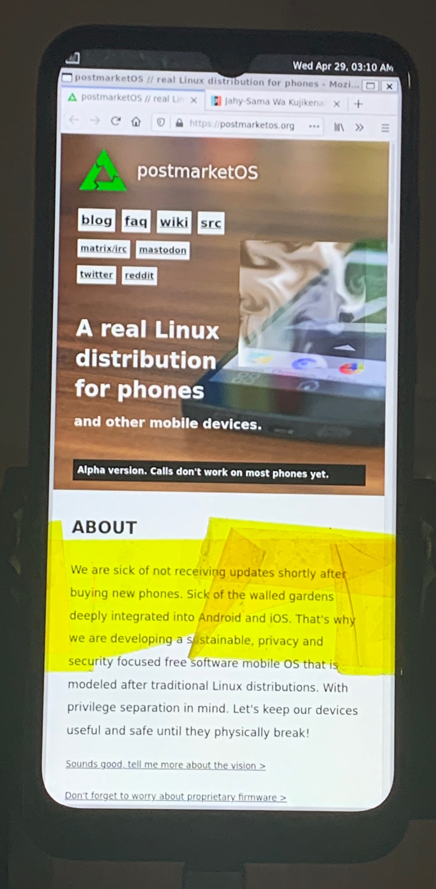

Xiaomi Redmi Note 8T (xiaomi-willow)
|
 Redmi Note 8T running firefox and weston-smoke (kapton tape holding UART in place) | |
| Manufacturer | Xiaomi |
|---|---|
| Name | Redmi Note 8T |
| Codename | xiaomi-willow |
| Released | 2019 |
| Category | testing |
| Original software | Android |
| Original version | 9 (MIUI 10) |
| postmarketOS kernel | 4.14.117 |
| Hardware | |
| Chipset | Qualcomm Snapdragon 665 (SM6125) |
| CPU | Octa-core (4x2.0 GHz Kryo 260 Gold & 4x1.8 GHz Kryo 260 Silver) |
| GPU | Adreno 610 |
| Display | 1080 x 2340 IPS LCD |
| Storage | 32GB, 64GB, 128GB |
| Memory | 3GB, 4GB, 4GB |
| Architecture | aarch64 |
| Unixbench Whet/Dhry score | 4168.2 |
{kind=link}
| USB Networking |
Works
|
|---|---|
| Flashing |
Works
|
| Touchscreen |
Works
|
| Display |
Partial
|
| WiFi |
Broken
|
| FDE | |
| Mainline | |
| Battery | |
| 3D Acceleration |
Broken
|
| Audio | |
| Bluetooth | |
| Camera | |
| GPS | |
| Mobile data | |
| SMS | |
| Calls | |
| USB OTG / USB-C Role switching |
Works
|
| NFC | |
| Accelerometer | |
|---|---|
| Magnetometer | |
| Ambient Light | |
| Proximity | |
| Hall Effect | |
| Barometer | |
| Power Sensor | |
| Camera Flash | |
|---|---|
| Keyboard | |
| Touchpad | |
| USB-A | |
| HDMI/DP | |
| Ir TX | |
| Ir RX | |
| Stylus | |
| Haptics | |
| Ethernet | |
| FOSS bootloader | |
Contributors
Maintainer(s)
Users owning this device
- DragonX256 (Notes: RU variant, currently in use with Pixel Experience)
- Maciej (Notes: Main device, running LineageOS)
- Rjeli
Note
This device is quite similar to the Xiaomi Redmi Note 7 (xiaomi-lavender), and many of the issues were solved with steps from that device page, so if you're hacking on the 8T it's a good idea to read the xiaomi-lavender page closely.
How to enter flash mode
Unlocking the bootloader
As with any Xiaomi device, in order to unlock the bootloader you need to sign up for a Mi Account, register your device through the MIUI Settings app (requires a working SIM inserted, but only for a few moments), and wait a week. The official Xiaomi tool only runs on Windows, but XiaoMiTool V2 worked for me on Debian Linux. Be careful, it's a closed source jar!
Before you go further
You are strongly recommended to install TWRP and back up ALL partitions to a safe place! (you can adb pull the images from twrp)
Entering recovery
Hold Volume Up + Power until you see the recovery screen.
Entering fastboot
Hold Volume Down + Power until you see the fastboot screen.
Installation
- Install pmbootstrap.
-
pmbootstrap -y zap; pmbootstrap init, choosexiaomi-willowas your device- firmware is currently needed for tianma touchscreen
- weston is currently the only tested display server
pmbootstrap install- Enter fastboot, plug USB into computer
pmbootstrap flasher flash_kernelpmbootstrap flasher flash_rootfspmbootstrap flasher flash_vbmeta- Reboot, sometimes
fastboot rebootworks, otherwise hold down Power until it reboots to system. - Hopefully weston comes up with
postmarketos-demos. ssh user@172.16.42.1
You can also use pmbootstrap flasher boot to boot the kernel/initramfs without flashing.
What's broken
- Restarting the display server will fail (due to panel power issues?)
UART
Necessary: reasonably fine soldering iron tip, steady hand
Highly recommended: microscope, steadier hand
- Disassemble the phone. Here's a decent video.
- I spent way too much time heating up the rubber and trying to use a suction cup. The glue is quite strong, and after heating up the edges to unreasonable temperatures I still couldn't pull the glass off with a suction cup. The key is to heat up the bottom a bit (around 100-150C) and use an extremely thin piece of metal to slide in the bottom and tear the rubber a bit. Then you can keep heating the edges and work your way around the perimeter.
- After removing the glass, remove the ~12ish green screws holding the upper panel in place. One is hidden under a sticker. Pop the panel off with more prying, as gently as you can but some force will be needed.
- This is the end of disassembly, the test points are now exposed.
- Solder as shown in diagram.
- Test connectivity between everything to make sure there's no shorts.
- Connect to your favorite UART adapter. It expects 1.8v, but I used this adapter that only goes down to 3.3v, and it hasn't bricked yet.
screen /dev/ttyUSB0 115200
Test point locations
Only TX pin soldered
Blurry pic of TX and RX soldered (taken pointing from the top of the phone towards the bottom)
{kind=link}
{kind=link}
{kind=link}
Partition Table
xiaomi-willow:~# gdisk -l /dev/mmcblk0 # EXPANDME
GPT fdisk (gdisk) version 1.0.5 Partition table scan: MBR: protective BSD: not present APM: not present GPT: present Found valid GPT with protective MBR; using GPT. Disk /dev/mmcblk0: 61071360 sectors, 29.1 GiB Sector size (logical/physical): 512/512 bytes Disk identifier (GUID): 14932C12-AAEA-7ACE-8D8F-C97EFAF3445D Partition table holds up to 88 entries Main partition table begins at sector 2 and ends at sector 23 First usable sector is 34, last usable sector is 61071326 Partitions will be aligned on 8-sector boundaries Total free space is 6 sectors (3.0 KiB) Number Start (sector) End (sector) Size Code Name 1 40 55 8.0 KiB FFFF switch 2 56 71 8.0 KiB A02C ssd 3 72 135 32.0 KiB FFFF secdata 4 136 199 32.0 KiB A040 limits 5 200 263 32.0 KiB FFFF multiimgoem 6 264 327 32.0 KiB FFFF multiimgqti 7 328 455 64.0 KiB FFFF qupfw 8 456 583 64.0 KiB FFFF qupfwbak 9 584 711 64.0 KiB FFFF vbmeta 10 712 839 64.0 KiB FFFF vbmetabak 11 840 1095 128.0 KiB FFFF xbl_config 12 1096 1351 128.0 KiB FFFF xbl_configbak 13 1352 1607 128.0 KiB FFFF devcfg 14 1608 1863 128.0 KiB FFFF devcfgbak 15 1864 2047 92.0 KiB FFFF bk0 16 2048 2303 128.0 KiB FFFF storsec 17 2304 2559 128.0 KiB A029 fsc 18 2560 3071 256.0 KiB A022 apdp 19 3072 4095 512.0 KiB A018 rpm 20 4096 5119 512.0 KiB FFFF rpmbak 21 5120 6143 512.0 KiB A017 hyp 22 6144 7167 512.0 KiB FFFF hypbak 23 7168 8191 512.0 KiB FFFF keymaster 24 8192 9215 512.0 KiB FFFF keymasterbak 25 9216 10239 512.0 KiB FFFF cmnlib 26 10240 11263 512.0 KiB FFFF cmnlib64 27 11264 12287 512.0 KiB FFFF cmnlibbak 28 12288 13311 512.0 KiB FFFF cmnlib64bak 29 13312 14335 512.0 KiB A02D keystore 30 14336 15359 512.0 KiB FFFF frp 31 15360 16383 512.0 KiB FFFF catefv 32 16384 17407 512.0 KiB FFFF uefivarstore 33 17408 19455 1024.0 KiB FFFF abl 34 19456 21503 1024.0 KiB FFFF ablbak 35 21504 23551 1024.0 KiB A01A ddr 36 23552 25599 1024.0 KiB FFFF bluetooth 37 25600 27647 1024.0 KiB FFFF bluetoothbak 38 27648 29695 1024.0 KiB A01F misc 39 29696 31743 1024.0 KiB FFFF dip 40 31744 33791 1024.0 KiB FFFF toolsfv 41 33792 35839 1024.0 KiB FFFF catecontentfv 42 35840 39935 2.0 MiB FFFF imagefv 43 39936 44031 2.0 MiB FFFF imagefvbak 44 44032 48127 2.0 MiB FFFF uefisecapp 45 48128 52223 2.0 MiB FFFF uefisecappbak 46 52224 56319 2.0 MiB FFFF cateloader 47 56320 60415 2.0 MiB A027 modemst1 48 60416 64511 2.0 MiB A028 modemst2 49 64512 71679 3.5 MiB A012 xbl 50 71680 78847 3.5 MiB FFFF xblbak 51 78848 87039 4.0 MiB A016 tz 52 87040 95231 4.0 MiB FFFF tzbak 53 95232 103423 4.0 MiB FFFF mdtpsecapp 54 103424 111615 4.0 MiB FFFF mdtpsecappbak 55 111616 127999 8.0 MiB FFFF spunvm 56 128000 131071 1.5 MiB FFFF bk1 57 131072 163839 16.0 MiB A021 devinfo 58 163840 180223 8.0 MiB FFFF logfs 59 180224 200703 10.0 MiB A02A fsg 60 200704 233471 16.0 MiB FFFF metadata 61 233472 262143 14.0 MiB FFFF bk2 62 262144 294911 16.0 MiB FFFF oops 63 294912 344063 24.0 MiB FFFF dtbo 64 344064 393215 24.0 MiB FFFF dtbobak 65 393216 458751 32.0 MiB FFFF mdtp 66 458752 524287 32.0 MiB FFFF mdtpbak 67 524288 589823 32.0 MiB FFFF dsp 68 589824 655359 32.0 MiB FFFF dspbak 69 655360 786431 64.0 MiB A026 persist 70 786432 917503 64.0 MiB A026 persistbak 71 917504 983039 32.0 MiB 8300 logo 72 983040 1114111 64.0 MiB A036 boot 73 1114112 1245183 64.0 MiB FFFF bootbak 74 1245184 1376255 64.0 MiB FFFF splash 75 1376256 1507327 64.0 MiB FFFF logdump 76 1507328 1638399 64.0 MiB A025 recovery 77 1638400 1900543 128.0 MiB A01C rawdump 78 1900544 2162687 128.0 MiB FFFF minidump 79 2162688 2949119 384.0 MiB FFFF exaid 80 2949120 3473407 256.0 MiB 0700 modem 81 3473408 3997695 256.0 MiB FFFF modembak 82 3997696 4784127 384.0 MiB A039 cache 83 4784128 4816895 16.0 MiB FFFF gsort 84 4816896 6914047 1024.0 MiB 8300 cust 85 6914048 10059775 1.5 GiB A038 vendor 86 10059776 19496959 4.5 GiB A038 system 87 19496960 61071326 19.8 GiB A03A userdata
Additional Info
Info from the Note 7 port that also applies to the 8T:
- Xiaomi_Redmi_Note_7_(xiaomi-lavender)#Android_Verified_Boot_(vbmeta)
- Xiaomi_Redmi_Note_7_(xiaomi-lavender)#DTBO_partition
- Xiaomi_Redmi_Note_7_(xiaomi-lavender)#Bootloader_cmdline
Kernel config
- Disabled
CONFIG_RNDIS_IPAbecause it panics at boot ifCONFIG_USB_CONFIGFS_RNDISis set. IPA seems to be an IP offload IC (?) that will route RNDIS straight to the modem with RMNET (?) over BAM (?).
See also
- pmaports!1197 Initial merge request
- Device package
- Kernel package